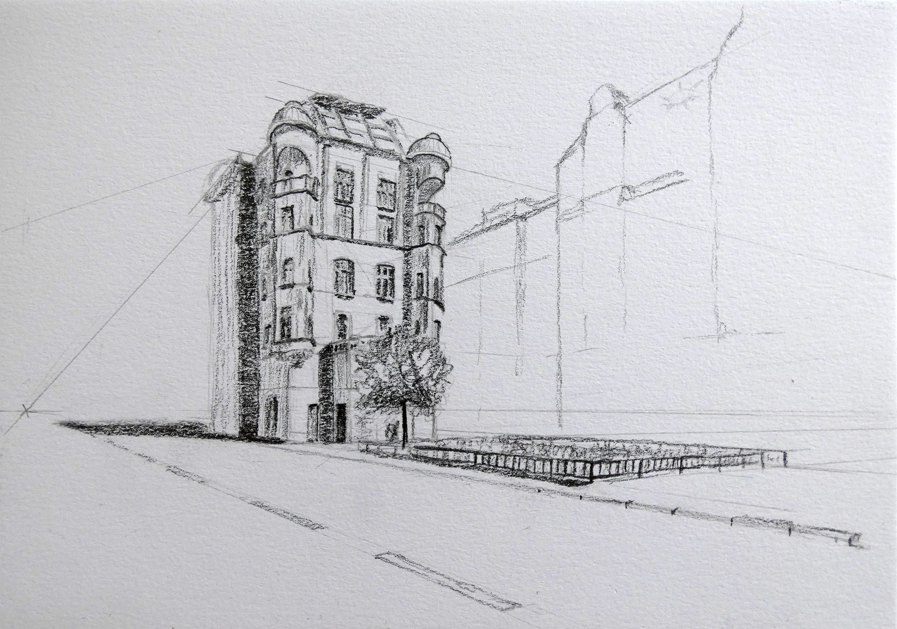
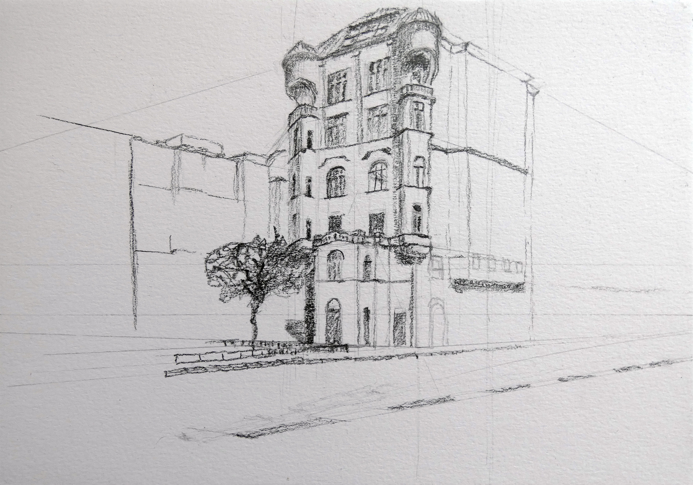
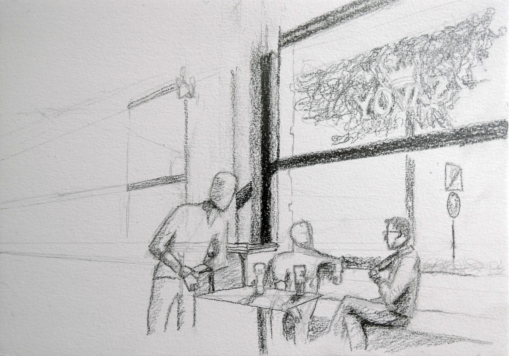
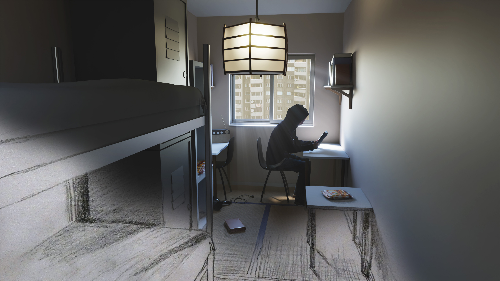

TU Wien Portfolio
Pencil drawings of a building from different angles


Pencil drawing of a coffee shop with sitting and standing people

Graphical interpretation of a text passage from "Norwegian Wood". Collage of a 3D render and a pencil sketch.
